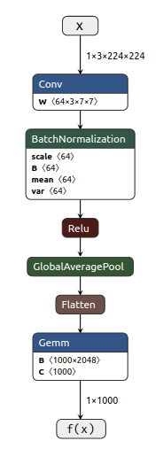
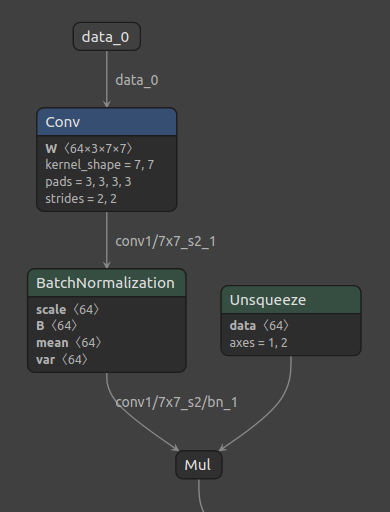
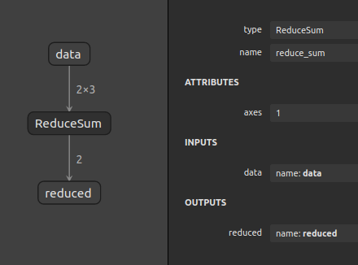
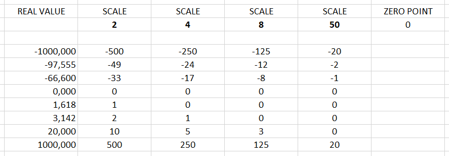

DEEP LEARNING
on the inside
Tomasz Dołbniak
MUC++
Gdańsk, April 2021
 nGraph
nGraph
 ONNX
ONNX
OpenVINO
tomdol tomdol
Artificial neural networks
Real-life models
(fragment of the Faster R-CNN model)
Graph representations
- nodes: operations vs individual neurons
- edges: tensors vs individual weights
- graph: computational graph vs linear graph with layers
Model as a function
 ->
->
DOG
->
->
DOG
$$y = f(x)$$
1 => DOG
0 => NOT A DOG
Model as a function
 ->
->
WTF?
->
->
WTF?
model = approximation of a function
with a certain accuracy
Universal approximation theorem
Universal approximation theorems imply that neural networks can represent a wide variety of interesting functions when given appropriate weights.
en.wikipedia.org/wiki/Universal_approximation_theorem
Deep Learning model
from a C++ developer's perspective
// generates a class of functions
template <float A, float B>
float linear_function(const float x)
{
return A * x + B;
}
float linear_function(const float x) {
return 3.14 * x + 1.618;
}
Deep Learning model
from a generic developer's perspective
$$f(x) = Gemm(Flatten(GlobalAveragePool(Relu(BatchNormalization(Conv(x))))))$$

Questions?
Graphs in Deep Learning

model
->
function
->
graph
$$f(x) = ax + b$$

computational graphs
Operators

- Convolution, Pooling, TopK, Concat,ReLU, Reshape, ...
- ONNX ops (over 160)
- Inputs & outputs - data
- Attributes - behavior parametrization
- Functions or classes in the code
Tensors
- N-dimentional data arrays (float, int, int8, int64, ...)
- Flat, contiguous blocks of allocated memory
- Shape - {1, 3, 224, 224} or {3, 3}
- Dimensions (static or dynamic)
- Rank
ReduceSum of a 2D tensor

Questions?
Inference
Naïve implementation
- Topological sort of the graph
- Implementation of the operators
- Sequential execution of sorted nodes
- Probably wasting a lot of HW potential
- Cores not utilized
- No vectorization
- Not good enough for big, real-life models
Kernels
- Highly specialized functions/primitives
- Hardware specific
- Architecture & available instructions dependent
- Data type, data shape (rank)
- oneDNN - Intel CPU & GPU
Direct Optimization
- DL framework + kernels = performance
- N frameworks * M hardware platforms = a lot of work
- K operations in each framework = even more work
- HW independent optimizations?
Questions?
from the technical standpoint
- a library
 inside
inside python API
python API
from the functional standpoint
- HW independent IR of DL models
- graph compiler
- an optimizing compiler
- ngraph::Function
nGraph
Graph optimizations
- HW independent
- Operate on an ngraph::Function
- Graph pattern matching & replacement
- "Function passes"
Implicit broadcast

Constant folding

NOP elimination
- Elimination of "useless" nodes
- Convert int -> int
- Broadast or Reshape when
target_shape == input_shape - Reduction without a given axis
- Addition of zero or multiplication by one
Questions?
ngraph::Function
ngraph::Node
Creating a simple Function
Creating a simple Function
ideone.com/TJQ1IL
...or some questions?
Quantization
$$q(r) = \lfloor r/s \rfloor + z$$
#include <limits>
- std::numeric_limits<float> $$1\times10^{-38} \longleftrightarrow 3\times10^{38}$$
- std::numeric_limits<int8_t> $$-128 \longleftrightarrow 127$$
- std::numeric_limits<uint8_t> $$0 \longleftrightarrow 255$$
Quantization
$$q(r) = \lfloor r/s \rfloor + z$$

Joules and m2 per operation
Quantization benefits
- Less power (edge devices)
- Smaller chip
- Better cache utilization
- Smaller weights == smaller model
- Performance
HW support - VNNI
intel.ai/intel-deep-learning-boostavx-512-animation.html
lowering-numerical-precision-increase-deep-learning-performance.html
AVX512_VNNI
fp32 vs int8
medium.com/apache-mxnet/model-quantization-for-production-level-neural-network-inference-f54462ebba05
What about accuracy?
medium.com/apache-mxnet/model-quantization-for-production-level-neural-network-inference-f54462ebba05
DEEP LEARNING
on the inside
Materials
- docs.openvinotoolkit.org/latest/index.html
- docs.openvinotoolkit.org/latest/omz_models_public_index.html
- docs.openvinotoolkit.org/latest/omz_demos.html
- github.com/openvinotoolkit/openvino
- github.com/openvinotoolkit/model_server
- onnx.ai
- github.com/onnx/models
- 3Blue1Brown - neural nets
- coursera.org/specializations/deep-learning
- infoshare.pl